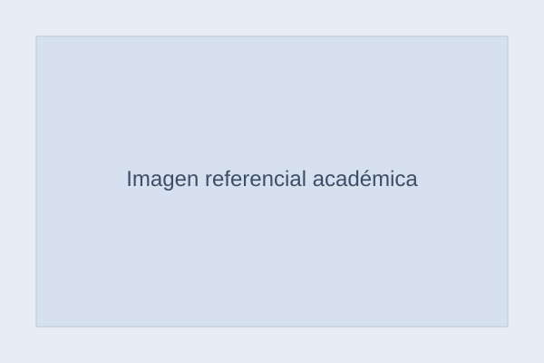

Solia María Centeno Castro de Baglivo
Investigadora en educación, saberes ancestrales y políticas públicas educativas
Abogada, escritora y conferencista boliviana. Su trabajo se orienta al estudio de la transformación educativa, la educación intercultural y el diálogo entre saberes ancestrales y políticas públicas.
Áreas de trabajo
Proyecto destacado
Voces Ancestrales de la Educación
Proyecto orientado a explorar cómo la sabiduría de los pueblos originarios del Oriente Boliviano puede contribuir a repensar el sistema educativo desde una perspectiva intercultural, territorial y humanizadora.
Publicaciones seleccionadas
Sobreviviendo al Sistema Educativo
La Muerte fue la Liberación
Libros colectivos
Conferencias y divulgación
Participación en espacios educativos, literarios y culturales vinculados con educación intercultural, transformación educativa y reflexión pública.